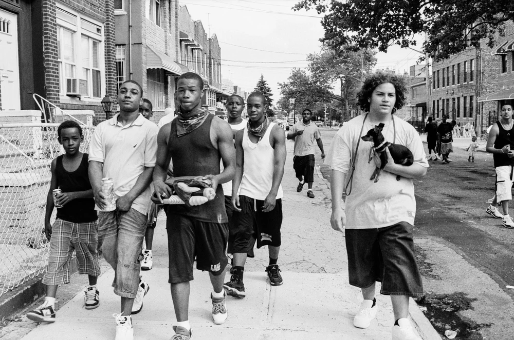
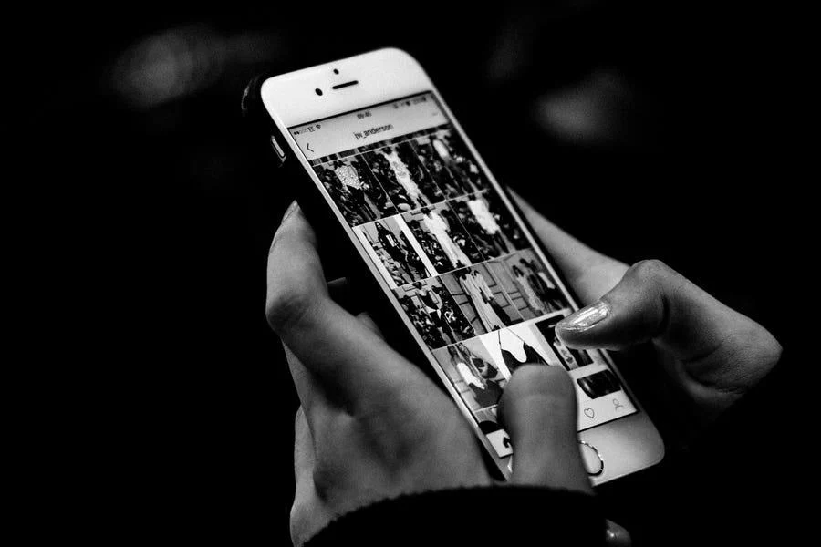

SOCIEDAD / COMUNIDAD
Pandillaje
Comprende sus causas, consecuencias y alternativas de prevención.
Explorar problemáticaEDICIÓN 001 — OTRA FORMA DE MIRAR
Historias que informan.
Perspectivas que transforman.
01 / EL PROYECTO
Change Lab reúne videos y recursos educativos sobre problemáticas sociales que merecen nuestra atención. Un espacio para descubrir, comprender y cuestionar lo que sucede a nuestro alrededor.
Conoce el proyectoEXPLORA / 001—003

Comprende sus causas, consecuencias y alternativas de prevención.
Explorar problemáticaDescubre el impacto social y ambiental de la moda rápida.
Explorar problemática
Aprende a reconocerlo y a construir espacios digitales más seguros.
Explorar problemática02 / CAMBIA EL ENFOQUE
Cuando conocemos distintas realidades, aprendemos a cuestionar nuestras ideas, comprender otras perspectivas y tomar decisiones más conscientes.
SIGUE LA PREGUNTA
Explora nuevas perspectivas y descubre historias que invitan a pensar diferente.
Empieza a explorar